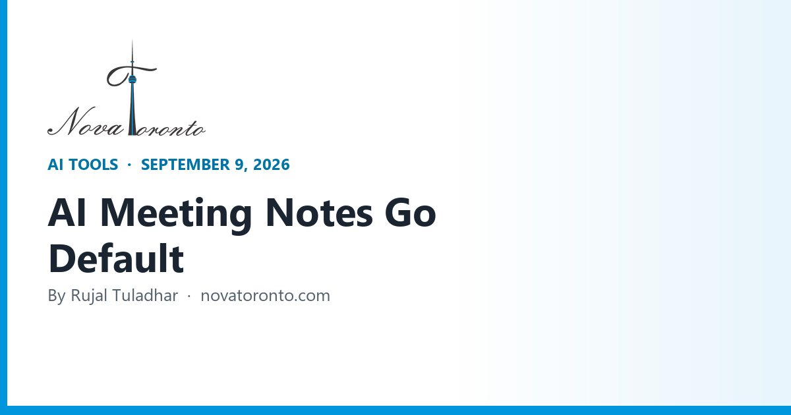

Google Meet Turns On AI Notes by Default September 21, 2026
Published September 9, 2026 • By Rujal Tuladhar

On or shortly after September 21, your team meetings may start writing themselves down without anyone choosing that. Google is flipping automatic note-taking in Google Meet to on by default for two of its most common business plans, and most owners we talk to in the GTA have no idea it is coming, let alone what they will tell a client who notices a notes icon on the call.
This is not a reason to panic, and the feature is genuinely useful. But an AI notetaker running on every three-person call is a recording decision, a privacy decision and a budget decision at once. Here is exactly what changes, what Canadian privacy rules expect of you, and whether the standalone notetaker you pay for is still worth the line item.
September 21, 2026
Meet note-taking defaults to on for Business Standard and Business Plus, meetings with 3+ guests
Consent is on you, not Google
One-party consent is the Criminal Code rule; PIPEDA still expects you to tell people
You may already own this
Gemini in Meet is included with Business Standard at CA$18.40 per user per month
Standalone tools still win on price
Fathom's free plan covers unlimited recordings; Fireflies Pro is $10 a seat billed annually
One admin decision this week
Set the default deliberately before it is set for you, then write the consent line
Google Meet Turns On AI Notes by Default September 21, 2026 at a glance — the short version.
What actually changes on September 21
Google's admin guidance is blunt about it: "On or after September 21, 2026 if you have Business Standard or Business Plus, automatic note-taking in Google Meet will be on by default for meetings with 3 or more guests (including the host)." Admins can opt the whole organisation out from the Google Admin console, and individual users can override the admin setting from their own Meet settings.
The feature itself is not new. "Take notes for me" uses Gemini to write a summary, decisions and action items into a Google Doc that lands in Drive after the call. Google's July 16 update lists availability as Business Standard and Plus, Enterprise Standard and Plus, Frontline Plus and Google AI Pro for Education. Two limits are worth knowing before you rely on it: the support page says meetings must be conducted in English, French, German, Italian, Japanese, Korean, Portuguese or Spanish, and that it "supports one language at a time" — a bilingual sales call that drifts between English and Cantonese is not covered.
Google also extended this off the video call entirely. Since mid-August, you can tap "Take notes" on the Meet home screen for an in-person meeting, and Gemini turns the room audio into a summary, action items and transcript in a Doc. Rollout began August 11 on Android, August 14 on web and August 31 on iOS.
The consent question you have to answer first
Two separate rules apply, and clearing one does not clear the other. The criminal rule is the easier one: under section 184(2)(a) of the Criminal Code, the offence of intercepting a private communication "does not apply to a person who has the consent to intercept, express or implied, of the originator of the private communication or of the person intended by the originator thereof to receive it." You are a participant in your own meeting, so recording it is not the crime.
The rule that actually governs your business is privacy law. The Office of the Privacy Commissioner's guidelines for meaningful consent say organisations must make clear what personal information is collected, who else receives it, and the purposes, "in sufficient detail such as to ensure they meaningfully understand what they are invited to consent to." Express consent is expected where information is sensitive or where the practice sits "outside of the reasonable expectations of the individual." A transcript of a client telling you about their health, their finances or a dispute with a supplier is sensitive by any reading.
In practice that is a sentence, not a legal project. Say at the top of the call that an AI assistant is taking notes, what it produces, where the notes are stored and who sees them, and offer to turn it off. Then actually be able to turn it off in one click — which is the real reason to know where that toggle lives before the 21st.
Check what you are already paying for
Before you buy a notetaker, look at your existing bill. On Google Workspace Canadian pricing, Business Standard is listed at CA$18.40 per user per month (with an introductory discount for new customers), and the plan comparison explicitly includes "Gemini in Meet — let AI summarize, translate, and take notes in meetings." If you are on Business Starter, that is the upgrade that buys the feature; the organiser's plan is what matters, not the guest's.
Zoom is a different shape. Its assistant is now branded ZoomMate, and the free ZoomMate Basic tier is deliberately thin: meeting summaries for 3 hosted meetings per month, AI note-taking for 3 uses per month and 20 AI queries per month. The paid product is a separate purchase — Zoom's June 1 launch announcement says ZoomMate "is available today for online and direct customers in North America, starting at $20 per user per month with included AI credits."
Microsoft is the strictest of the three. Microsoft's own Teams Premium licensing page puts "View AI-generated notes and tasks from meetings" and "Intelligent Meeting Recap" in the Teams Premium column only — a standard Teams licence gets you recaps of meetings you attended, not AI notes and tasks. The same page notes that as of April 1, 2026 some features previously exclusive to Teams Premium moved to Teams Enterprise, and that admins can run a 30-day trial while users can self-serve a 60-day one. Try before you add a per-seat add-on across the team.
When a standalone notetaker is still the better buy
Built-in tools only cover meetings held on their own platform. If your week is a mix of Meet, Zoom, Teams and phone calls, a dedicated notetaker is still cheaper and more consistent than upgrading everything.
Fathom has the most generous free plan we could verify. Its pricing page lists Free at $0 with "Unlimited recordings + transcriptions", a choice of bot-free (in beta) or bot capture, and instant AI call summaries. Premium is $20 a month ($16 billed annually); Team is $19 per user per month ($15 annually, two-user minimum); Business is $34 ($25 annually) and adds CRM field sync and coaching metrics.
Fireflies is the value pick for a small team that lives in a CRM. Its own pricing explainer, dated July 10, 2026, lists Pro at $10 a seat billed annually or $18 monthly, Business at $19 annually or $29 monthly, and Enterprise at $39 annually only. Every tier including Free gets unlimited transcription; what you are buying is storage — 400 minutes per team on Free, 8,000 minutes per seat on Pro, unlimited on Business.
Otter is the searchable-archive option: Basic is free with "300 monthly transcription minutes", Pro is $16.99 per user monthly or $8.33 billed annually with 1,200 minutes, and Business is $30 monthly or $19.99 annually with unlimited meetings. Granola, which takes a quieter approach by enhancing notes you type yourself, prices Basic at $0, Business at $14 per user per month and Enterprise at $35. Zapier's independent roundup, updated in April 2026, lands in a similar place: Fireflies for collaboration and topic tracking, Granola for combining human and AI notes, Otter for asking questions about your meetings, and Fathom as the free option.
Who should not bother: if all your meetings are on Meet and you are already on Business Standard or Plus, a second tool adds a second copy of your client conversations in a second vendor's cloud for no new capability. That is more privacy exposure, not less.
A one-week rollout that will not embarrass you
Adoption is running ahead of policy right now. Statistics Canada's June 11, 2026 analysis found 19.2% of Canadian businesses used AI to produce goods or deliver services in the year to Q2 2026, roughly triple the 6.1% of two years earlier, with 21.0% of urban businesses using it against 9.9% of rural ones. Notably, 19.9% of businesses with only one to four employees are already in — this is not just a big-company story.
Five steps, in order:
- Decide the default. In the Admin console, choose whether note-taking is on for all 3+ guest meetings, on only for internal ones, or off. Doing nothing is also a choice, made on September 21.
- Pick one tool. Built-in for single-platform teams, one standalone notetaker for mixed ones. Not both.
- Write the consent line into your invite template and your call opening, covering what is captured, where it is stored and who can see it.
- Set retention. Decide how long transcripts live in Drive and who owns the folder. Notes of a client's medical or financial details should not sit in a personal Drive indefinitely.
- Assign the follow-up. Notes are only worth anything if action items become tasks. Route them into whatever you already use, even if that is a shared inbox.
The bottom line
September 21 is a small change with a wide blast radius: every three-person call on Business Standard or Plus starts producing a document, and clients will notice before your policy does. The upside is real — no more "who was going to send the quote?" — but the value shows up only when the notes turn into follow-up somebody actually does. If you want that wired properly, so meeting action items land in your CRM, your quoting flow or your booking system instead of a Drive folder nobody opens, that is the kind of plumbing we build for GTA businesses at Nova Toronto. A short conversation is usually enough to tell whether it is worth automating at all.
Want this working in your business?
Book a free 30-minute call and we'll map out which of these would actually save you time and win you customers.
Book a Free ConsultationSources: Google Workspace Admin Help — Upcoming changes to automatic note-taking in Meet • Google Workspace Updates — New "Take notes for me" settings for admins and end users (July 16, 2026) • Google Workspace Updates — Take notes for me for in-person meetings (August 2026) • Google Meet Help — "Take notes for me" language requirements • Google Workspace — Canadian plans and pricing • Justice Laws Canada — Criminal Code, section 184 • Office of the Privacy Commissioner — Guidelines for obtaining meaningful consent • Zoom — ZoomMate product page (AI assistant tiers) • Zoom Newsroom — Zoom launches ZoomMate (June 1, 2026) • Microsoft Learn — Microsoft Teams Premium licensing • Fathom — Pricing • Fireflies.ai — Fireflies pricing: which plan is right for you (July 10, 2026) • Otter.ai — Pricing • Granola — Pricing • Zapier — The best AI meeting assistants (updated April 2026) • Statistics Canada — Analysis on AI use by businesses in Canada, Q2 2026